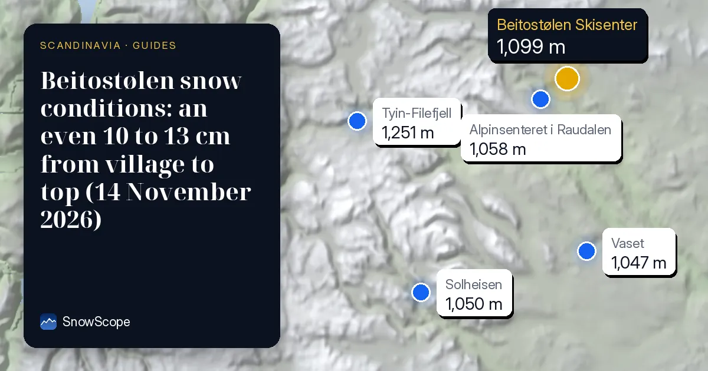
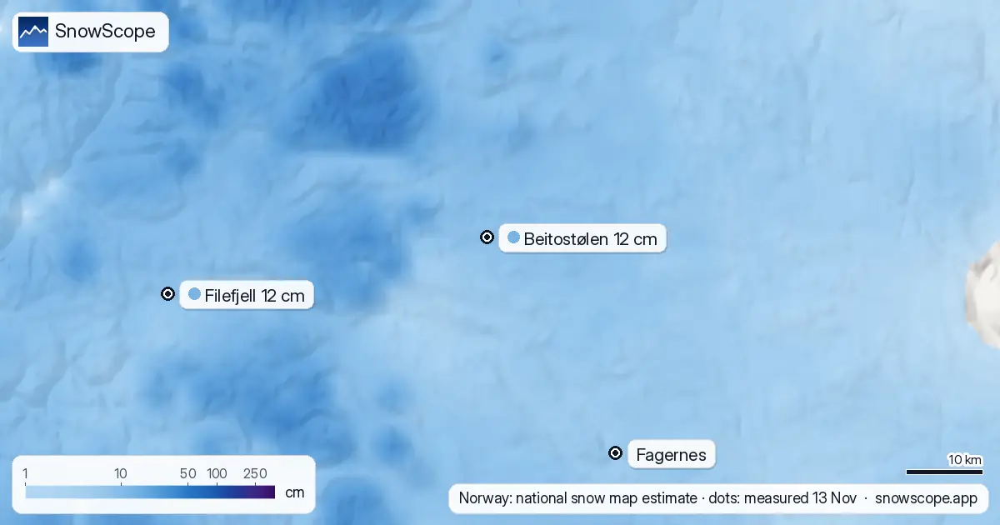

Beitostølen snow conditions: an even 10 to 13 cm from village to top (14 November 2026)
Beitostølen occupies a narrow band of altitude between 901 and 1099 m, which means snow cover stays almost uniform across the whole terrain. On 13 November the weather station at 965 m recorded 12 cm, and SnowScope shows the same depth from the village to the top of the lifts. For a mountain this high and compact, that is a rare advantage: no dramatic variations between different parts of the resort.
See the live snow forecast for Beitostølen Skisenter in the SnowScope appSnow depth, powder alerts and the 3D map, free.

What you see today
Nine centimetres fell over the past week. The thin layer is now on the ground everywhere, with no surprise gaps between lower and upper slopes. At Beitostølen, 12 cm measured at the station is what skiers will find across all elevations.
Compared with the past 46 winters, this is early-season timing: typical depth on 14 November is 35 cm at the base and 46 cm at the top. The shortfall is normal for mid-November, when the season is still building. Rock hazards below the thinner areas of the base are real; check the terrain carefully before you commit to a line.

The shape of winter here
Beitostølen's compact profile is unusual in Norwegian ski terrain. Because base and summit differ by only 198 m, weather systems affect the whole area much the same way. The first snow arrives around 3 to 8 October. By 30 November the typical depth grows to 53 cm at the base and 63 cm at the top, and by Christmas to 66 and 76 cm respectively.
The worst winter on record saw a peak of just 97 cm at the top; the best reached 191 cm. Over the past 15 winters the median peak dropped slightly to 149 cm from 161 cm in the 15 winters before that, a shift that mirrors most of central Norway.
What the next week brings
Ten centimetres of snow is forecast across the next seven days at all three elevations. Other sources range between 11 and 40 cm, so there is some uncertainty, but the pattern is consistent: the air will stay cold, and the snow line will hover around 500 m, well below the resort. Almost no rain is expected at the ski area's altitude.
Cold nights support any snowmaking work. Each new fall will stick and stay, building on what is already there. By 21 November the typical depth would reach 43 cm at the base and 54 cm at the top; by the end of the month around 53 and 63 cm.
November cross-country, December turns alpine
Beitostølen is known across Norway for early cross-country skiing. The grooming machine was already running on 13 November, so prepared trails exist. The alpine lifts are not yet spinning, and no opening date is published, but the building snow cover and stable weather suggest late November or early December for downhill terrain.
The resort sits at 901 m, high enough that November days are short and the wind can bite even on days that feel mild in the valleys below. Pack layers under your jacket. On the open terrain above the lifts, cloud can roll in and hide the route markers; stay on marked paths in poor visibility.
Altitude as your edge
Many Norwegian resorts struggle in mid-November because their bases lie too low to hold snow reliably. Rain replaces snow, or fresh powder melts. Beitostølen avoids this trap. Everything sits high enough that November cold locks in any snow that falls, and the snow line stays far below the terrain. You will not find deep cover yet, but you will find reliable snow.
Check the official avalanche bulletin at Varsom before you venture off-piste or into terrain above the marked slopes. Early-season snow is thin and can hide rocks; test unfamiliar lines with care.
Tips for skiers
- Cross-country skiers: the grooming season opened on 13 November. Consult the official trail report to pick classic or skate routes while alpine terrain stays closed.
- Pack more layers than a forecast in Oslo suggests. November nights at 900 m are cold, and wind on the open slopes can drop perceived temperature quickly.
- Rock hazards exist under thin cover. Feel the base with a probe or pole before you ski a new line, especially on south-facing slopes where melting may have thinned the pack.
- If you plan to visit in two weeks, expect about 50 cm at mid-height and near-continuous cover. Early December is when Beitostølen shifts from early-season caution to reliable skiing.
- Check Varsom for the official avalanche forecast before leaving marked runs or climbing into steeper terrain.
About these numbers
Resort snow depths are the deepest snow on the resort's upper slopes on the date shown; they are estimates for an area, not a measurement at one point. Forecasts can change. Always read the official avalanche bulletin before going off-piste.
Official avalanche bulletins: Varsom (NVE)
Cite this report
For research, teaching or the press: the numbers and charts are free to reuse under CC BY 4.0 with this citation.
SnowScope (2026), Beitostølen snow conditions: an even 10 to 13 cm from village to top (14 November 2026), https://snowscope.app/blog/en/2026/11/beitostolen-snow-conditions-14-november-2026.html, accessed 2026-11-14
SnowScope (Atlas Labs). (2026, November 14). Beitostølen snow conditions: an even 10 to 13 cm from village to top (14 November 2026). SnowScope snow reports. https://snowscope.app/blog/en/2026/11/beitostolen-snow-conditions-14-november-2026.html
BibTeX
@misc{snowscope2026beitostolensnowcondition,
author = {{SnowScope (Atlas Labs)}},
title = {Beitostølen snow conditions: an even 10 to 13 cm from village to top (14 November 2026)},
year = {2026},
month = nov,
howpublished = {\url{https://snowscope.app/blog/en/2026/11/beitostolen-snow-conditions-14-november-2026.html}},
note = {Published 2026-11-14 20:49 UTC; accessed 2026-11-14}
}· CC BY 4.0 · Methods, data and tools →
Beitostølen Skisenter: snow and temperature by height, this winter vs last (tools) →
Follow Beitostølen Skisenter
Free: a message when fresh snow is coming, and the forecast every morning.
More snow reports

Trondheim's coast is bare, but 18 cm lies inland at higher ground. SnowScope measured the snow on 13 November 2026.

Tromsø town has 6 cm but the Lyngen Alps hold 44 cm. SnowScope measured snow across the region on 13 November.

Tampere has no snow on 13 November, but 2 cm fell 48 km away. The city is a few days late; usually half of winters have snow by now.